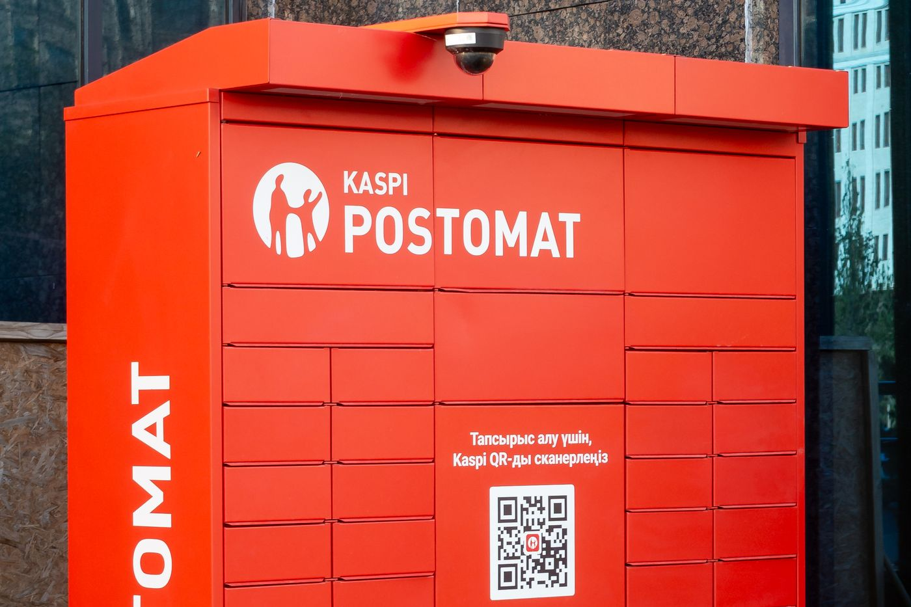

Bigger but Less Profitable: Kaspi.kz after the Hepsiburada Acquisition
Revenue grew 60% in 2025, but net income grew only 1%.

.jpg){kind=link}
Summary
In January 2025 Kaspi.kz bought a controlling stake in Hepsiburada, a leading Turkish online marketplace. The deal lifted revenue by 60% in 2025 but left net income almost flat, cutting the net margin from 41.7% to 26.4%. The Kazakh business stayed highly profitable; the fall comes from Turkey.
Key findings
- Revenue grew by 60% in 2025 after Hepsiburada was consolidated, up from 32% growth in 2024.
- Net income rose by only 1%, so the net margin fell from 41.7% to 26.4%.
- The Marketplace segment grew from 22.9% to 47.1% of segment revenue, mostly because of Turkey.
- Kaspi bought 65.4% of Hepsiburada for about $1.13 billion and raised its stake to 85% by January 2026.
What changed in 2025
On 29 January 2025 Kaspi bought 65.4% of Hepsiburada for about $1.13 billion. It raised its stake to 76% in December 2025 and signed an agreement in January 2026 that took it to 85%.
The acquisition explains almost all of the change. In 2025 the Turkish business added ₸1.03 trillion of segment revenue but made a net loss of ₸93 billion. Kazakhstan and Kaspi's other markets earned ₸1.16 trillion of net income on ₸3.07 trillion of segment revenue.
| 2023 | 2024 | 2025 | |
|---|---|---|---|
| Payments | 478,684 | 587,097 | 658,726 |
| Marketplace | 448,223 | 732,943 | 1,931,472 |
| Fintech | 1,026,721 | 1,281,827 | 1,542,934 |
| Total revenue | 1,913,490 | 2,532,156 | 4,046,074 |
| Net income | 848,770 | 1,056,834 | 1,067,707 |
| Revenue growth | n/a | +32.3% | +59.8% |
| Net income growth | n/a | +24.5% | +1.0% |
| Net margin | 44.4% | 41.7% | 26.4% |
| Marketplace share of segment revenue | 22.9% | 28.3% | 47.1% |
Segment revenue is before inter-segment eliminations and customer rewards. Source: Kaspi.kz JSC.
Valuation
At the close on 30 October 2026 Kaspi's shares on the Kazakhstan Stock Exchange cost ₸42,570, which values the company at about ₸8.1 trillion (Table 2). That is 7.6 times its net income for 2025. Kaspi paid ₸850 per share for the fourth quarter of 2025 and for the first quarter of 2026, and ₸1,000 for the second quarter. If it keeps paying ₸1,000 a quarter, the yield is 9.4%.
Nu Holdings, a Brazilian digital bank, trades at 15.8 times its profit over the last twelve months. A low multiple usually means that investors expect slower growth or see more risk. For Kaspi the obvious reasons are in the next section: losses in Turkey, currency exposure and net income that grew only 1% in 2025.
| Share price, 30 October 2026 | ₸42,570 |
| Market value | ₸8,090 billion (US$17.8 billion) |
| Price to 2025 profit (P/E) | 7.6 |
| Dividend yield | 9.4% |
Market value is the KASE price times 190.03 million shares. Dividend yield uses ₸1,000 a quarter. Sources: KASE; Stock Analysis (share count, Nu Holdings).
How it compares
Of the seven companies covered on this site, Kaspi.kz is the third cheapest by price to 2025 profit. The table ranks them from lowest to highest.
| Company | Market value, US$ bn | P/E | P/B | Dividend yield |
|---|---|---|---|---|
| Halyk Bank | 9.0 | 3.8 | 1.12 | 15.6% |
| Geely Automobile | 19.0 | 7.5 | n/a | 3.6% |
| Kaspi.kz | 17.8 | 7.6 | n/a | 9.4% |
| Kazatomprom | 16.2 | 12.9 | n/a | 4.6% |
| KazMunayGas | 48.5 | 20.5 | n/a | 1.6% |
| Air Astana | 0.6 | 41.0 | 1.50 | none |
| China Southern Airlines | 6.3 | 48.9 | 1.17 | none |
P/E is the market value divided by 2025 profit; P/B uses the latest reported equity, where shown in the notes. A low P/E can mean a cheap share or a profit the market expects to fall. Sources: KASE; Stock Analysis; National Bank of Kazakhstan exchange rates.
Who owns the company
Kaspi.kz is still run by the people who built it. Mikheil Lomtadze, the chief executive, holds 23.0% of the shares in circulation, and Vyacheslav Kim, chairman of the board, holds 20.1%. Both are co-founders. The Baring funds hold 19.0%. In April 2026 the Chinese technology group Tencent bought Kaspi shares from the Baring funds, together with Lomtadze and members of management.
Risks
- Hepsiburada still loses money. The key test for 2026 is whether these losses shrink.
- Turkey has high inflation and a weak lira, and the deal was paid in U.S. dollars, which raises Kaspi's exchange-rate risk.
- Integration may be difficult: Kaspi warns that its international expansion may fail, and before the deal Hepsiburada had reported weaknesses in its internal financial controls.
My view
I don't consider the fall in margin a big problem. Large acquisitions and investments dilute margins at first, because the new business is not yet as profitable as the main one. In my opinion, it is a great tactic to grow Kaspi beyond Kazakhstan, because it gives the company more ways to make a profit. I would buy Kaspi shares as a long-term investment.
This note is independent research for information and learning. It is not investment advice or a recommendation to buy or sell any security.
Notes and method
- All figures come from Kaspi.kz's annual report on Form 20-F for 2025 (segment and earnings notes, pp. F-33 to F-42).
- Segment revenue is shown before inter-segment eliminations and customer rewards, so the three segments do not add up exactly to total revenue.
- Growth rates, net margin (net income divided by revenue) and segment shares are calculated by the author from the reported figures.
- 2025 is the first year that includes Hepsiburada, consolidated from 29 January 2025.
Sources
- Kaspi.kz JSC, Annual Report on Form 20-F for the fiscal year ended 31 December 2025 (U.S. SEC filing)
- Kaspi.kz investor relations
- Kazakhstan Stock Exchange (KASE), share pages for KSPI, HSBK, KZAP, KMGZ and AIRA, trades on 30 October 2026
- Stock Analysis, valuation statistics (price to earnings over the last twelve months) for Nu Holdings, Cameco and BYD, 31 October 2026
- Kazakhstan Stock Exchange, Information on shares and shareholders of Kaspi.kz as of July 1, 2026
- Kaspi.kz, Board of Directors (investor relations website)
- Kaspi.kz, Tencent invests in Kaspi.kz alongside co-founder and CEO Mikheil Lomtadze (April 2026)
Download
Chingiz Bakytzhanov (2026). Bigger but Less Profitable: Kaspi.kz after the Hepsiburada Acquisition. Steppe & Silk Research, 8 October 2026. https://steppesilk.com/research/kaspi-hepsiburada.html
Found an error? Email chingiz.bakytjanov@gmail.com. Corrections are listed here with their date.